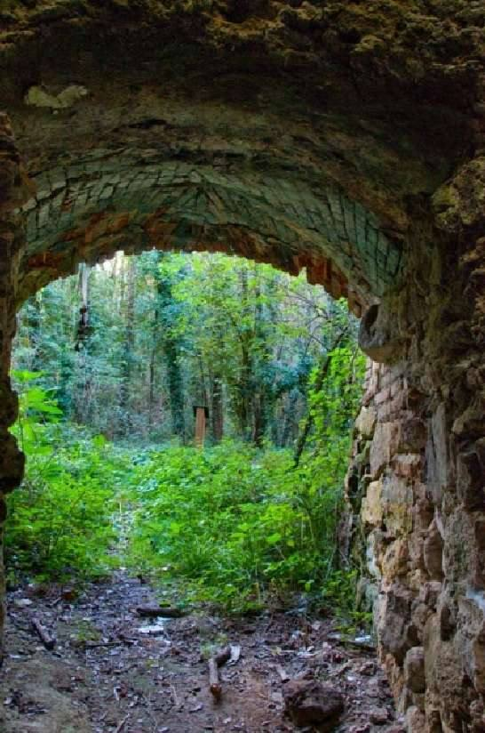

Ruta · Gualba
Aquest recorregut ens fa pujar per un sot humit i frondós , al costat del Torrent de la Manera, per arribar entre alzinars a dalt el coll de la Cuera del Fum. Ara, de baixada per la carena,…